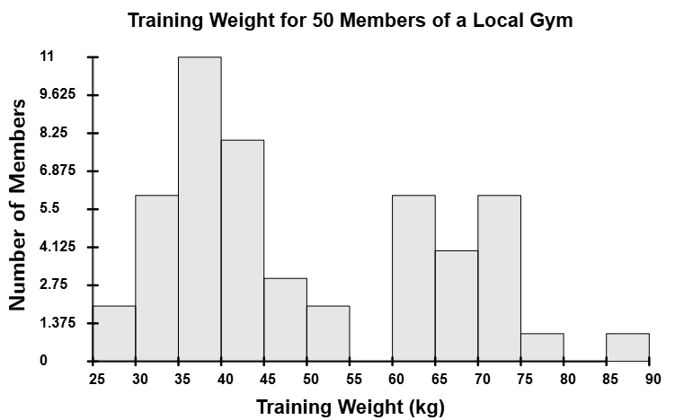
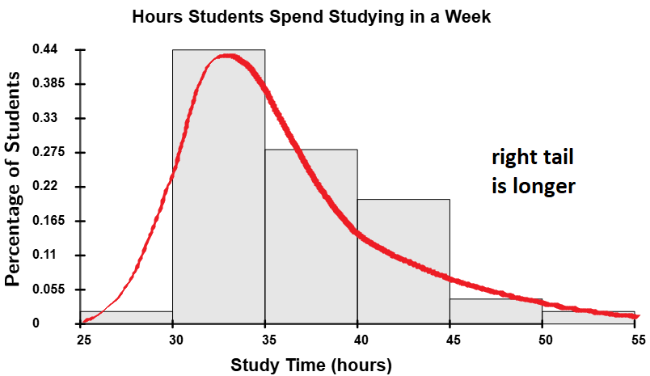

Shapes of Frequency Distributions
The shape of a frequency distribution is an important geometric property that we can determine from its histogram. While there is one shape that is the most important, we will discuss other shapes at various points during the course. Before diving into the different shapes, it is helpful to understand some important concepts related to distributions: the peak and tails of a distribution.
The Peak and Tails
What is the peak of a distribution?
The peak of a distribution refers to the tallest part of the histogram,
which
represents the class(es) with the most data. Distributions can have one peak
(unimodal)

multiple peaks
(multimodal)


What are the tails of a distribution?
The tails of a distribution refer to the far ends of the distribution, which represent the extreme values of the dataset. For example, in a histogram, the left tail corresponds to the smallest values, while the right tail corresponds to the largest values. The shape and behavior of the tails can provide insights into the skewness and outliers of the distribution.

Now that we understand the tails and peaks of frequency distributions, let’s examine the different shapes these distributions can take.
Shapes of Distributions
What are the different shapes of frequency distributions?
There are three main shapes: unimodal, multimodal, and uniform.
Unimodal Distributions (single-peak)
Unimodal distributions have a single peak in their histogram. These distributions begin with small bars that gradually increase in height from left to right, reach a peak at one class, and then decrease from left to right. There are three subtypes of unimodal distributions: normal, skew-left, and skew-right.
Normal Distributions (aka bell-shaped distribution)
This is the most important distribution in the course. A normal distribution is symmetric, with its peak located at the center. Its tails extend in both directions but gradually get closer and closer to the horizontal axis as they extend outward. The shape of the histogram for a normal distribution resembles a bell, hence the name "bell-shaped distribution."
Skew-Left Distributions
A skew-left distribution (also called negatively skewed) is a distribution where the left tail is longer than the right tail. In these distributions, the majority of the data values are concentrated toward the right side of the histogram, with fewer values on the left. This creates a tail that extends toward smaller values.

Skew-Right Distributions
A skew-right distribution (also called positively skewed) is a distribution where the right tail is longer than the left tail. In these distributions, the majority of the data values are concentrated toward the left side of the histogram, with fewer values on the right. This creates a tail that extends toward larger values.

Multimodal Distributions (multiple peaks)
Multimodal distributions have multiple peaks in their histogram. A bimodal distribution has two peaks, a trimodal distribution has three, and anything with four or more peaks is just called a multimodal distribution. While we won’t cover multimodal distributions in this course, you may encounter them in advanced statistics courses.

Uniform Distributions
Uniform distributions have bars that area all approximately the same height (give or take a small margin of error).

Homework Note
Homework problems will ask you to identify the shape of a distribution. The easiest way to determine the shape is by drawing or visualizing a curve through the tops of the bars, as shown in the examples above for unimodal and multimodal distributions. If the distribution is uniform, all the bars should be approximately the same height.